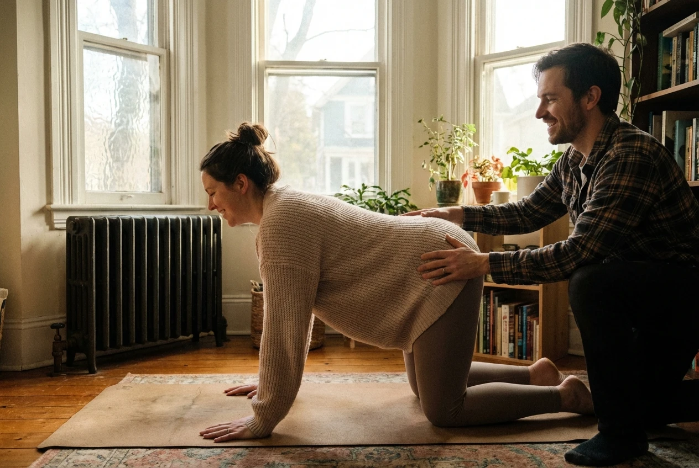

Growing a human being is perhaps the most profound physical, emotional, and spiritual transformation a person can experience. Your body is performing daily miracles—building organs, forming neural pathways, creating an entire consciousness. Prenatal yoga isn't about staying fit or preparing for labor, though it does both. It's about honoring this transformation with presence, gentleness, and awe.
I started teaching prenatal yoga fifteen years ago, shortly after my own first pregnancy. Like many expectant mothers, I'd approached pregnancy with a checklist mentality—the right vitamins, the best stroller, every recommended test. What I didn't expect was how utterly disconnected I felt from my changing body. Prenatal yoga gave me back that connection. It taught me to work with my body's wisdom rather than trying to control every outcome. Now, I have the privilege of offering that same gift to others.
Prenatal yoga is specifically designed for the unique needs of pregnancy. Unlike regular yoga classes, where you might push for deeper stretches or stronger holds, prenatal practice is about softening, opening, and creating space—both physically and emotionally. The poses are modified to accommodate your growing belly, protect your joints (which become more lax during pregnancy), and support your changing center of gravity. But more importantly, the entire approach shifts from achieving to allowing.
Your body already knows how to grow this baby. Prenatal yoga simply gives you tools to support what's already happening with more ease and presence.

One of the most valuable aspects of prenatal yoga is breath work. Learning to breathe deeply and consciously during pregnancy serves you in countless ways. It calms your nervous system, reducing stress hormones that can affect your baby. It helps manage discomfort—from morning sickness to back pain to Braxton Hicks contractions. And it prepares you for labor, where breath becomes your most powerful tool for riding waves of intensity. "I used my yoga breathing through my entire labor," shares Emma, who attended prenatal classes throughout her pregnancy. "When contractions peaked, I returned to that long, steady breath we'd practiced for months. It gave me something to anchor to."
The physical benefits of prenatal yoga are well-documented: reduced back pain, improved sleep, decreased anxiety, better circulation, and preparation for the physical demands of labor. But what practitioners often value most is the community. Prenatal classes create spaces where pregnant people can share their experiences, fears, and joys without judgment. "I felt so isolated in my pregnancy until I found prenatal yoga," recalls Maya. "Finally, I was with people who understood the weird hip pain, the emotional roller coaster, the simultaneous excitement and terror. We cried together, laughed together, and supported each other through birth and beyond."
A typical prenatal class at SILK Yoga includes gentle warm-ups to ease common pregnancy discomforts, modified poses that strengthen the legs and open the hips, restorative postures with props for deep relaxation, breath work and visualization for labor preparation, and always, time for questions and community sharing. We never rush. Pregnancy itself is a lesson in surrendering timelines, and our practice reflects that.
Safety is paramount. Always practice with a certified prenatal yoga instructor who understands the contraindications and necessary modifications for pregnancy. Avoid deep twists, strong abdominal work, lying flat on your back after the first trimester, and any pose that doesn't feel right in your body. Trust your instincts—if something feels off, it probably is. Your body is your wisest guide right now.
Beyond physical practice, prenatal yoga cultivates a mindset that serves you in motherhood. You learn to be present with discomfort without trying to fix it immediately. You practice asking for support when you need it. You honor your body's limits while also discovering strengths you didn't know you had. These lessons don't end at birth—they're the foundation of mindful parenting.
Perhaps most beautifully, prenatal yoga creates space for bonding with your baby before birth. When you rest in child's pose, you're literally curled around your growing child. When you practice breath work, you're sharing oxygen, rhythm, and calm with them. When you place your hands on your belly and breathe, you're having your first conversations—wordless, but profound. "Prenatal yoga helped me fall in love with my baby before I even met her," reflects Sarah. "Every practice was time we spent together, just the two of us, before the world got involved."
If you're pregnant and considering prenatal yoga, know this: you don't need to be flexible, experienced in yoga, or even particularly comfortable with your changing body. You just need to be willing to show up and honor this extraordinary journey you're on. Your body is doing something miraculous. Prenatal yoga is simply a way of bearing witness to that miracle with gratitude, presence, and grace.


Maya Chen
20 Nov 2024As a mom myself, I wish I'd had a guide like this when I was expecting. Prenatal yoga was such a grounding force, helping me connect with my body and my baby during a time of immense change.
REPLYEmma Clarke
25 Nov 2024This article beautifully captures the essence of prenatal yoga. I remember attending classes and finding such a supportive community of expecting mothers. The breathing techniques were invaluable during labor too!
REPLYLisa Thompson
01 Dec 2024Being a creative arts mom, finding balance was key during pregnancy. Prenatal yoga allowed me to tap into my inner calm and maintain a sense of fluidity, which was so important for both my mental well-being and my artistic flow.
REPLYRachel Kim
18 Nov 2024I've photographed so many beautiful expectant mothers, and those who practiced prenatal yoga always radiated such a serene strength. This guide highlights how deeply impactful that practice can be.
REPLYJennifer Walsh
05 Dec 2024Balancing work and pregnancy was tough, but my prenatal yoga class became my sanctuary. It helped me manage stress, alleviate back pain from long hours, and gave me dedicated time to bond with my baby before they arrived.
REPLYAnna Kowalski
22 Nov 2024Running a bakery is demanding, and pregnancy added another layer of challenges. Prenatal yoga was essential for strengthening my core and easing the constant pressure on my lower back.
REPLYHannah Price
10 Dec 2024As an art student, I'm always looking for ways to connect with my body and express myself. Prenatal yoga felt like a moving meditation, helping me stay centered and present during my pregnancy.
REPLYRebecca Foster
28 Nov 2024Teaching all day can be exhausting, especially when pregnant. Prenatal yoga was my secret weapon against fatigue and swollen ankles. It also gave me a peaceful space to mentally prepare for motherhood.
REPLYGrace Patterson
02 Dec 2024As a retired nurse, I've seen firsthand the physical and emotional toll pregnancy can take. This article is spot on; prenatal yoga offers a gentle yet powerful way for mothers to nurture themselves.
REPLYDorothy Mitchell
16 Nov 2024I remember when my daughter was expecting; she struggled with anxiety. I encouraged her to try gentle movement, and prenatal yoga changed everything for her. Wonderful to see such a comprehensive guide.
REPLYCatherine Reeves
08 Dec 2024In my bookshop, I often recommend resources for expectant parents. This article perfectly articulates the benefits of prenatal yoga, from physical comfort to mental serenity.
REPLYSusan Williams
21 Nov 2024Being a local realtor means I'm always on my feet, and during my pregnancy, prenatal yoga was a lifesaver for my hips and lower back. Highly recommend it to all expecting mothers!
REPLYAmanda Brooks
12 Dec 2024As a freelance writer, I appreciate anything that helps with focus and reduces stress, especially during pregnancy. Prenatal yoga provided a beautiful space to connect with my body's changes.
REPLYSophia Rodriguez
29 Nov 2024As a yoga instructor, I've seen the incredible transformation prenatal practice brings. It's not just about poses; it's about breathwork, meditation, and building a supportive community.
REPLYNina Petrova
04 Dec 2024Ballet taught me discipline, but prenatal yoga taught me gentleness and acceptance during pregnancy. The focus on breath and pelvic awareness was surprisingly helpful for understanding my body's shifts.
REPLYMaya Chen
09 Dec 2024Reading this makes me nostalgic for my own prenatal days. The gentle stretching and conscious breathing made such a difference, especially with the restless legs I had in my third trimester.
REPLYEmma Clarke
19 Nov 2024I often think about the friendships forged in those prenatal yoga classes. Sharing stories and anxieties with other expecting mothers created a bond that lasted long after our babies arrived.
REPLYLisa Thompson
14 Dec 2024During my pregnancy, prenatal yoga was my sanctuary. It was the only time I truly felt connected to my changing body in a positive way, and the relaxation techniques were a godsend for sleepless nights.
REPLYRachel Kim
26 Nov 2024The article's emphasis on honoring motherhood really resonates. I captured some stunning images of a friend doing prenatal yoga, and the peace and strength she exuded were palpable.
REPLYJennifer Walsh
03 Dec 2024Work-life balance is always a challenge, but with pregnancy, it felt even more critical to prioritize self-care. Prenatal yoga helped me maintain my energy levels and cope with labor anxiety.
REPLYAnna Kowalski
17 Nov 2024I loved the focus on strengthening and opening in prenatal yoga. It really helped me with my posture and gave me more stamina for long days on my feet at the bakery. Plus, the community aspect was so comforting.
REPLYHannah Price
06 Dec 2024My art often explores themes of transformation, and pregnancy is the ultimate transformation. Prenatal yoga helped me embrace these changes with grace and curiosity.
REPLYRebecca Foster
23 Nov 2024I recommend prenatal yoga to all my pregnant colleagues. It's not just about staying fit; it's about building resilience and finding inner peace, which are essential for motherhood.
REPLYGrace Patterson
11 Dec 2024Even years later, I recall the deep sense of calm prenatal yoga brought to my pregnancies. As a nurse, I understood the physiology, but yoga connected me to the emotional and spiritual side of creating life.
REPLYDorothy Mitchell
30 Nov 2024My neighbor, bless her heart, was so anxious about childbirth. I suggested she try a prenatal yoga class, and it transformed her experience. She felt so much more prepared and empowered.
REPLYSarah Mitchell
15 Dec 2024Thank you all for these beautiful reflections. Every story shared here reminds me why I continue teaching prenatal yoga—it's about so much more than poses. It's about community, self-discovery, and honoring this sacred journey.
REPLYCatherine Reeves
15 Dec 2024Just ordered some prenatal yoga books for the shop based on this wonderful discussion. The wisdom in these comments is as valuable as the article itself!
REPLY